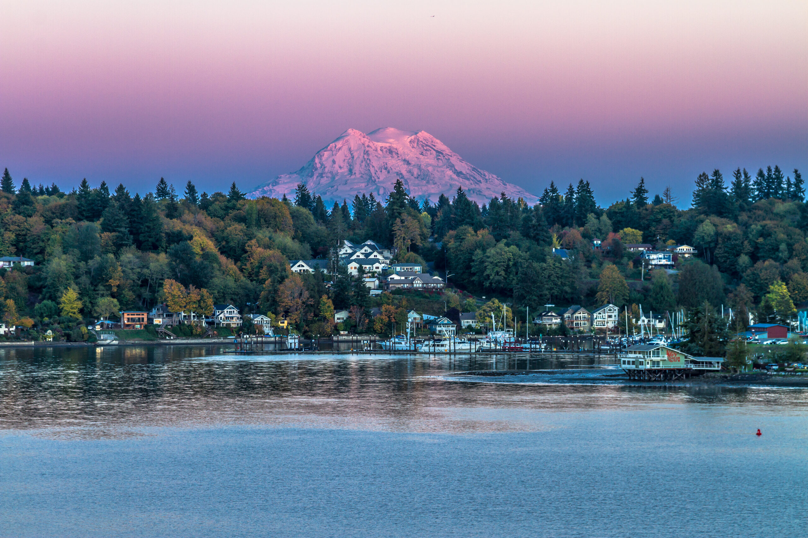
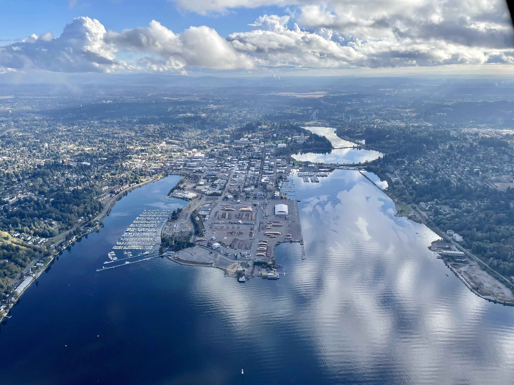
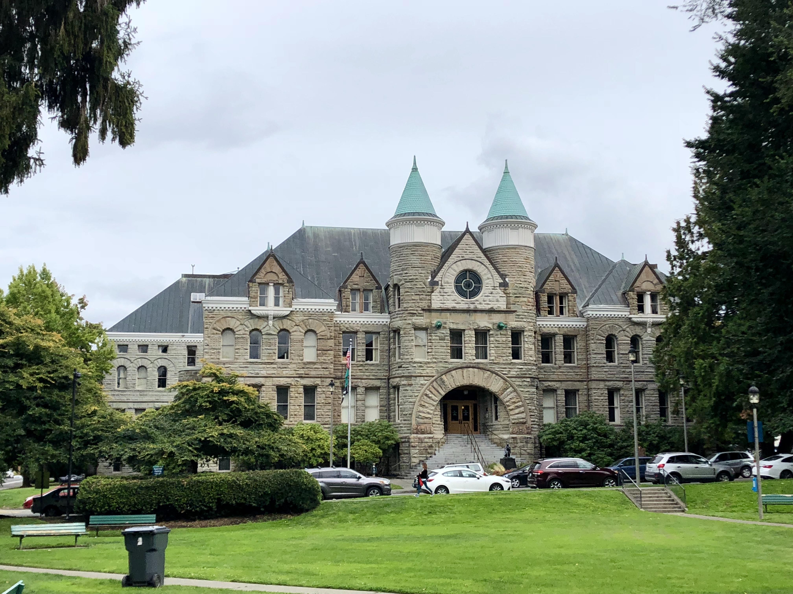

General City Information
- Population: 55,733
- Metro Area Population: 298,758
- Date Incorporated: January 28, 1859
- Classification: Urban
- Average Income Level: $76930.00 per household. Below state median of $94952.00

Olympia is the capitol city of Washington State. Situated at the southern point of Puget Sound in Western WA, it offers beautiful vistas of both the Cascade and Olympic mountain range on either side of the sizeable body of saltwater. It is a rainy climate home to lush plant life. The low elevation and insulation of the sea air makes temperatures relatively mild year-round. The city is notable for its political importance, its multiple private and commercial ports, and beautiful architecture.


